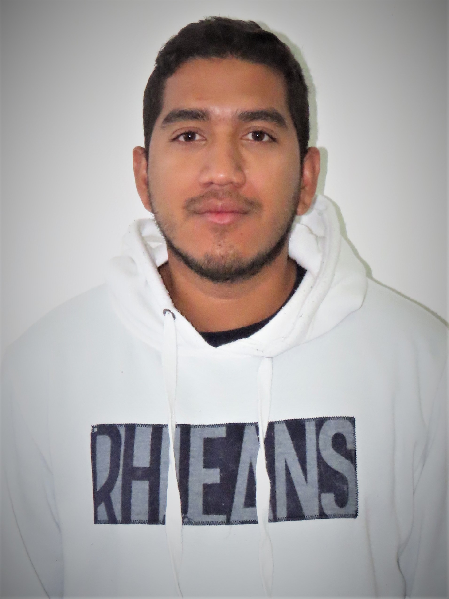

| CV Texto |
Curriculum VitaeMiguel FariasResumenProfesional del área de la informática. Nacido en la ciudad de Maturin, Estado Monagas, Venezuela. Actualmente residenciado en la ciudad de El Salvador, Chile. Datos Personales
Formación AcadéminaIngeniería en Informática, 2019, UPTNM "Ludovico Silva", Venezuela. CursosLos siguientes cursos los he realizado en la plataforma educativa Udemy:
Redes SocialesInstragram: @miguellfariass |